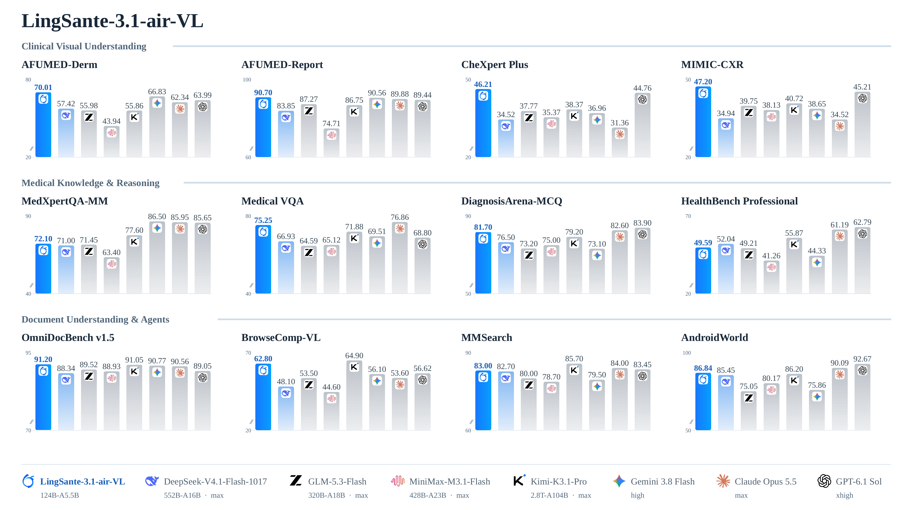

🤗 Hugging Face | 🤖 ModelScope
Introduction
LingSante-3.1-air-VL is a lightweight, natively multimodal mixture-of-experts (MoE) model for real-world healthcare. Built on Ling-3.0-flash-VL, it has 124B parameters and 5.5B active parameters per token. It accepts text and images and supports 256K-token context window. It is the first large multimodal medical model that Ant Group's healthcare team has released as open source.
The model's four clinical focus areas are medical imaging reports, multimodal health assessment (skin disease recognition, dietary and nutritional analysis, and medical report interpretation), medical search and evidence synthesis, and medical GUI agents. It also retains strong capabilities in general multimodal tasks, document and chart understanding, and tool use. Search, tool use, and GUI workflows require an external environment that provides tools, maintains state, and validates actions.
Important. LingSante-3.1-air-VL is a research model and is not a medical device. Its outputs may be incomplete or inaccurate and must not substitute for professional medical advice, diagnosis, or treatment. High-risk use requires review by qualified personnel, independent validation, and compliance with applicable privacy, safety, and healthcare regulations.

Key Capabilities
- Multimodal medical understanding and reasoning. The model considers patient history, imaging technique, and image quality before reviewing the images systematically. It then weighs differential diagnoses and writes the Findings and Impression sections. It can interpret multiple images together and identify 8–9 types of positive findings on a single complex chest X-ray, including cardiomegaly, pleural effusion, atelectasis, consolidation, pneumonia, and pneumothorax. It also interprets images of skin, meals, and medical reports.
- Health assessment with follow-up questions. The model covers 120+ skin diseases and can take a history over several turns. Before giving an assessment, it asks about the affected area, symptom duration, itching or pain, and medical history. For dietary analysis, it identifies ingredients even when they overlap or are mixed, breaks down complex dishes, estimates portions, and analyzes nutrient content. For medical reports, it links blood counts with inflammatory and immune markers to prioritize follow-up actions.
- Medical search and evidence synthesis. The model supports image-to-image search and can retrieve medical papers, clinical guidelines, and similar cases. It can use imaging tools and bounding boxes to verify lesion locations before drafting a report. The image → search → evidence → answer sequence makes the reasoning traceable and ties each conclusion to supporting evidence.
- Real-world medical workflows and GUI agents. For online appointments, the model can select a hospital, department, doctor, and time slot and enter patient details. For medication purchases, it can search for medicines, choose product specifications, enter prescription and address details, and handle pop-ups and validation checks. Evaluations use real apps with changing interfaces and login states.
- Joint training for medical and general capabilities. Medical training incorporates replay of general multimodal data and alignment on general tasks. This preserves general multimodal understanding, OCR, document and chart understanding, multimodal search, and GUI interaction.
Evaluation
The evaluations cover multimodal healthcare applications, imaging reports, complex multimodal medical reasoning, multimodal medical understanding, and medical text. They also cover general multimodal tasks, including document and chart understanding, along with multimodal search and GUI agents.
Results

Quickstart
SGLang (Recommended)
The LingSante-3.1-air-VL runtime includes native multimodal support, MTP (NEXTN) speculative decoding, and long-context optimizations.
bashdocker pull lmsysorg/sglang:dev-Ling-3.0-flash-VL
Server (4× 141GB-class GPUs, TP4, 256K context with YaRN):
bashdocker run --rm --gpus all --ipc=host --shm-size 32g \ -p 30000:30000 \ -e HF_TOKEN=<your-hf-token> \ lmsysorg/sglang:dev-Ling-3.0-flash-VL \ env SGLANG_ALLOW_OVERWRITE_LONGER_CONTEXT_LEN=1 \ python3 -m sglang.launch_server \ --model-path inclusionAI/LingSante-3.1-air-VL \ --tp 4 \ --context-length 262144 \ --json-model-override-args '{"rope_scaling":{"rope_type":"yarn","factor":2.0,"rope_theta":6000000,"partial_rotary_factor":0.5,"original_max_position_embeddings":131072}}' \ --trust-remote-code \ --reasoning-parser ling3 \ --tool-call-parser ling3 \ --host 0.0.0.0 --port 30000
On 8× 80GB H100/H800, use --tp 8 instead. Hopper decode optimizations can be enabled with SGLANG_ENABLE_FP8_BLOCK_GEMV=1 and SGLANG_ENABLE_FUSED_KDA_OUTPUT_QUANT=1.
Client
bashcurl -s http://localhost:30000/v1/chat/completions \ -H "Content-Type: application/json" \ -d '{"model": "inclusionAI/LingSante-3.1-air-VL", "messages": [{"role": "user", "content": [ {"type": "image_url", "image_url": {"url": "https://example.com/chest_xray.png"}}, {"type": "text", "text": "Read this chest X-ray and draft a structured imaging report."} ]}], "chat_template_kwargs": {"enable_thinking": true}, "stream": true, "temperature": 1.0, "top_k": 20, "top_p": 0.95}'
vLLM
Environment Preparation
bashpip install uv uv venv ~/my_ling_env source ~/my_ling_env/bin/activate git clone https://github.com/inclusionAI/vllm-ling-v3.git cd vllm-ling-v3 VLLM_USE_PRECOMPILED=1 uv pip install --editable . --torch-backend=auto
Run Inference
Server
bashvllm serve "$MODEL_PATH" \ --port "$PORT" \ --trust-remote-code \ --served-model-name auto \ --tensor-parallel-size 4 \ --gpu-memory-utilization 0.85 \ --enable-prefix-caching \ --mamba-cache-mode align \ --enable-auto-tool-choice \ --tool-call-parser ling3 \ --reasoning-parser ling3
Client
bashcurl -s http://${MASTER_IP}:${PORT}/v1/chat/completions \ -H "Content-Type: application/json" \ -d '{"model": "auto", "messages": [{"role": "user", "content": [ {"type": "image_url", "image_url": {"url": "https://example.com/skin_photo.jpg"}}, {"type": "text", "text": "What might this skin lesion be? Ask follow-up questions if needed."} ]}], "chat_template_kwargs": {"enable_thinking": true}, "stream": true, "temperature": 1.0, "top_k": 20, "top_p": 0.95}'
Intended Use
- Medical imaging report understanding, assisted generation, and multi-image reading in research settings.
- Multimodal assessment of skin conditions, diet, and medical reports, with review by qualified personnel.
- Medical question answering, evidence retrieval, and evidence synthesis with source verification.
- Development and evaluation of multimodal medical search, tool calling, and GUI agents.
- Research on medical multimodal reasoning, professional communication, and general-capability preservation.
Limitations and Responsible Use
- Medical outputs may be incorrect, incomplete, outdated, or unsupported by the cited evidence. Verify consequential claims against current authoritative sources and the original images.
- The model does not replace qualified healthcare professionals. It must not independently diagnose, prescribe, determine treatment, or make clinical triage decisions.
- Benchmark and simulated-environment results do not establish clinical effectiveness. Performance may vary across specialties, imaging conditions, languages, populations, institutions, and local resource conditions.
- Image quality, lighting, occlusion, and missing context can change the interpretation. Report generation and skin/diet assessments require review by qualified professionals.
- Long-context support does not guarantee complete retrieval of every relevant fact. Check source attribution, omissions, and contradictions when processing clinical records or literature.
- Protect personal health information and comply with applicable privacy, security, healthcare, and data-governance requirements.
- Use least-privilege tool access, auditable execution, and human approval for consequential actions. Search results and tool outputs can contain errors or malicious instructions.